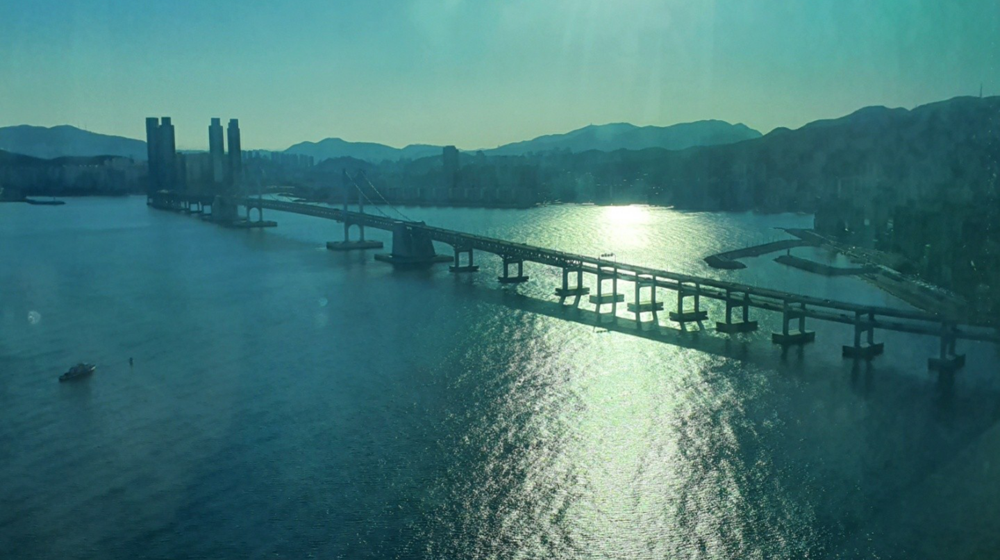

광안KCC스위첸하버뷰
건물 개요
위치: 부산광역시 수영구 민락동 181-79
공동주택 294세대 오피스텔 64실 상업시설 42실로서 지하3층 지상18층 2개동, 주차 378대, 건물높이 59.74m이다. 2021년 12월 준공예정, KCC스위첸 시공.
공동주택(도시형생활주택)은 23, 25, 39, 40 4가지 type 총 294세대이며 오피스텔은 28, 29 2가지 type으로 총64실, 상가는 1, 2층 각각 21실 총 41실로 구성되어있다
생활환경의 쾌적함
광안리 파도물결의 감성을 살린디자인으로 전세대에서 바다조망이 가능하며 공간 간섭을게 설계되었다.단지내 선은 4m를 확보하였고은 상가는 1층, 오피스텔은지하1층 그리고 도시은 지하2층부터 전용으로 구획되었다. 무인택배세탁실을 비치 하였으며 층고는 2.7m로 택배차량이 출입할수 있다.
주민공간및 안정성
3층에 입주민을 위한 Club Lounge와 피트니스센터가 위치 하며 옥상Terrace를 설치하였다다 탁트인 22mm Roy를 장착함으로서 바다시야였다.
냉난방은 개별설치이며 단지내 도로에 snow melting시설,CCT만 화소, 25m간격 비상주민 안전 시설 장치를